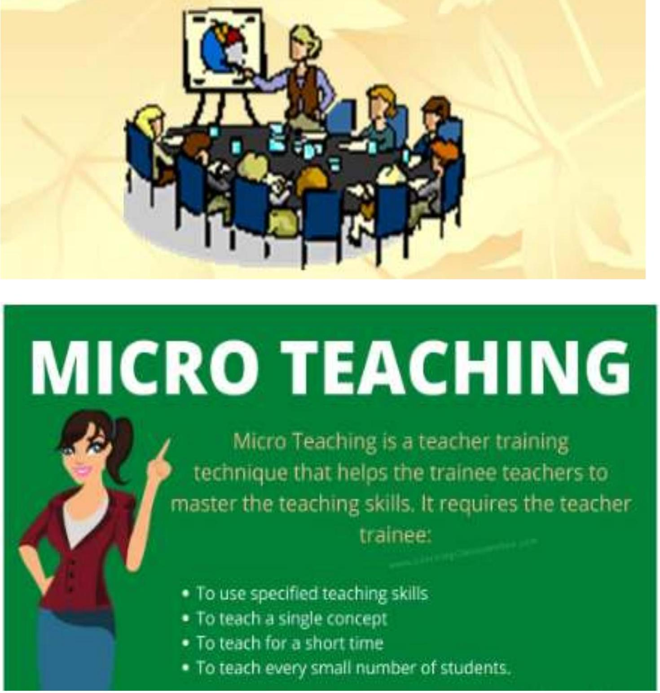
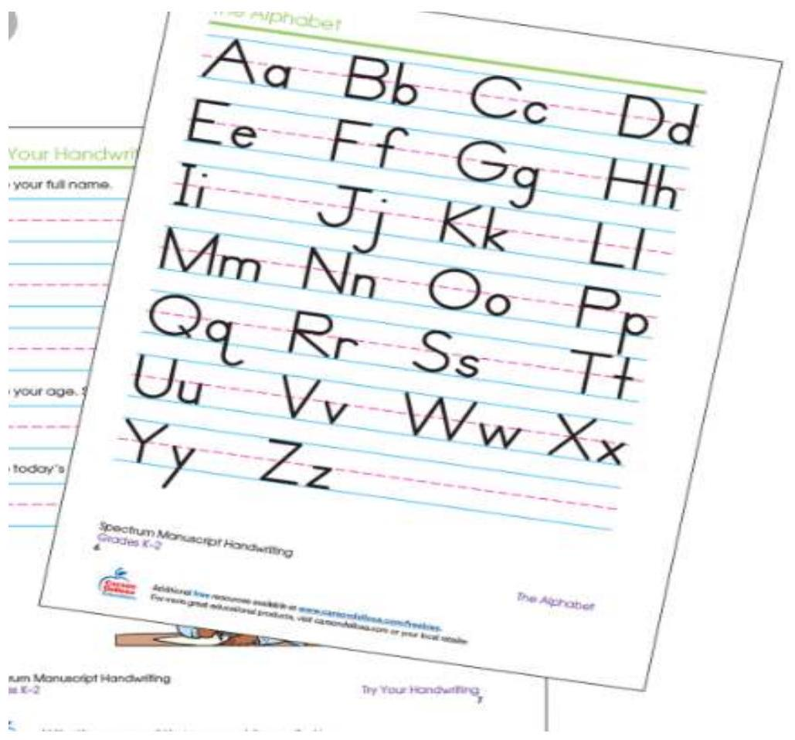
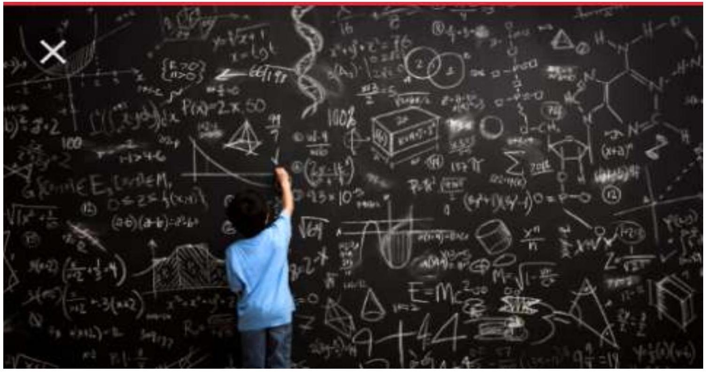
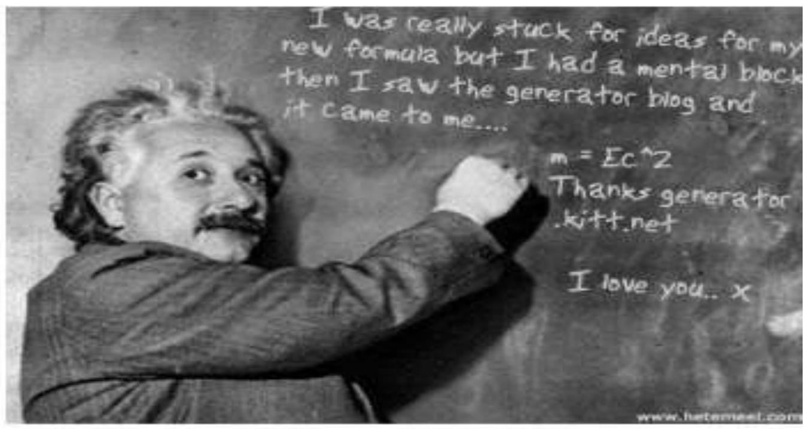
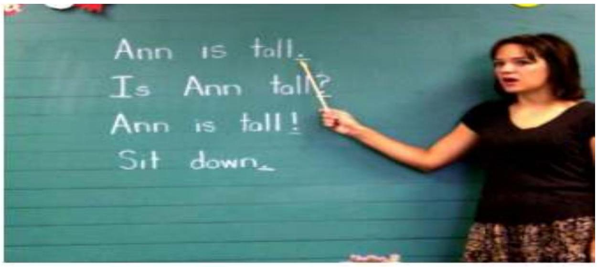

STRAND 4.0: MICRO TEACHING
Keys areas covered
- Introduction to microteaching
- Importance of micro Teaching
- Micro Teaching skills.
Facilitator's Notes
UNIT 4.1: INTRODUCTION TO MICRO TEACHING
What is teaching?
A process of imparting knowledge,skills and values from one person( teacher) to another(learner)
Teaching is the activity of facilitating learning. Effectiveness in teaching does not relate to teacher's age, sex, and teaching experience. Teaching is enhanced by the following best teacher qualities;
- Good planning and organizational skills
- Effective communication skills
- Good listening skills
- Collaboration-engaging classroom presence, value in real-world learning and exchange of best practices
- Adaptability(flexibility)
- Empathy
- Patience
- Expertize( mastery of content
- . Other characteristics of effective teaching include an
- Good researcher(Lifelong love of learning)
The concept of micro teaching
Dr. Allen and his group evolved Microteaching in 1963 in America.
 Feedback -> Re-plan -> Re-teach -> Re-feedback." class="content-image">What is Micro-teaching?
- Micro-teaching is a teacher training technique, which helps the teacher trainee to master the teaching skills, requiring him/her to teach a single concept using a specified teaching skill for a short period to a very small member of pupils.
- The teacher trainee continues to teach the concept over and over until he/she masters the skill involved in imparting it to the students.
- He/she is expected to make the lesson observable, measurable and controllable.
- Micro teaching can also be defined as a scaled down lesson demonstration by a trainee to a group of peers which is aimed at developing competence in application of a specific teaching skill by a trainee.
Characteristics/features of Microteaching
What are the main features of a micro teaching lesson?
- Duration of teaching as well as number of students are less-Teaching of a small unit of content to the small group of students (6-10) in a small amount of time (5-10 min.)
- Content is divided into smaller units.
- Only one teaching skill is considered at a time.
- Provision of immediate feedback.
- In micro teaching cycle, there is facility of re-planning, re-teaching and re-evaluation.
Phases of micro teaching
Micro-teaching emphasizes three things/phases:
- Knowledge Acquisition Phase :
In this phase the teacher trainee learns about the skill and its components through discussion, illustrations and demonstration of the skill given by the expert.
He/she learns about the purpose of the skill and the condition under which it proves useful in the teaching/learning process.
His/Her analysis of the skill into components leading to various types of behaviours which is to be practised.
The teacher trainee tries to gain a lot about the skill from the demonstration given by the expert.
He discusses and clarifies each and every aspect of the skill.
- Skill Acquisition Phase :
On the basis of the demonstration presented by the expert, the teacher trainee plans a micro-lesson, lesson for practising the demonstrated skill.
He practices the teaching skill through the Micro-teaching cycle and continues his efforts till he attains mastery level.
The feed-back component of micro-teaching contributes significantly towards the mastery level acquisition of the skill.
On the basis of the performance of teacher trainee in teaching, the feed back is provided for the purpose of change in behaviour of the teacher trainee in the desired direction.
- Transfer to learners Phase:
After attaining mastery level and command over each of the skills, the teacher trainee integrates all these skills and transfer to actual classroom teaching is done during this transfer phase.
Micro Teaching Steps
- ORIENTATION
- DISCUSSION OF TEACHING SKILL
- SELECTION OF A PARTICULAR TEACHING SKILL
- THE PRACTICE OF THE SKILL
- PROVING THE FEEDBACK
- RE-PLANNING
- RE-TEACHING
- RE-FEEDBACK
- REPETITION OF THE MICROTEACHING CYCLE
The Micro-teaching programme involves the following steps :
Step 1. Orientation: A Particular skill to be practised is explained to the teacher trainees in terms of the purpose and components of the skill with suitable examples.
Step 2: Discussion of the teaching skill: The teacher trainer gives the demonstration of the skill in Micro-teaching in simulated conditions to the teacher trainees.
Step 3: Lesson Planning: The teacher trainee plans a short lesson plan on the basis of the demonstrated skill for his/her practice.
Step 4: Skill practice: The teacher trainee teaches the lesson to a small group of pupils. His lesson is supervised by the supervisor and peers.
Step 5: Feedback: On the basis of the observation of a lesson, the supervisor and peers give feedback to the teacher trainee.
The supervisor reinforces the instances of effective use of the skill and draws attention of the teacher trainee to the points where he could not do well.
Suggestions for improvement are given by the supervisor and peers.
Step 6: Re-planning: In the light of the feed-back given by the supervisor, the teacher trainee replans the lesson plan in order to use the skill in more effective manner in the second trial.
Step 7: Re- Teaching: The revised lesson is taught to another comparable group of pupils by incorporating the suggested strategies.
Step 8: Re-feedback: The supervisor observes the re-teach lesson and gives re-feed back to the teacher trainee with convincing arguments and reasons.
Step 9: Repetition of the micro Teaching cycle: The 'teach - re-teach' cycle may be repeated several times till adequate skill mastery level is achieved.
UNIT 4.2: PURPOSE OF MICRO TEACHING
Why is micro teaching important?
Micro teaching;
- Enables the trainee to learn and assimilate a new teaching skill.
- Helps the trainee to develop and apply a number of teaching skills
- Enhances communication development; problem-solving and critical thinking skills.
- Enhances confidence in teaching
- Helps individual trainees to compare effectiveness of variations of different presentations thus improving experience to the trainee.
- Helps the trainees to learn from one another.
- Exposes the trainees to real life classroom setups
- Prepares teacher trainees on how to deal with real classroom settings effectively.
- Acts as an induction exercise for trained teachers to improve the skills of experienced teachers.
UNIT 4.3: MICRO TEACHING SKILLS
What are micro teaching skills?
- These are the skills that are utilized to deliver the lesson in a more logical and systematic manner.
- The teacher requires mastery of the art of bringing the learners to focus, from the beginning to the end of the lesson and acquire learning effectively.
- A teacher trainee in the process of micro-teaching should be able to know how to do lesson preparation and planning, lesson introduction,presentations and explanation, effective questioning, illustration with examples, blackboard utilization, reinforcement, stimulus variation, classroom management,use of audio-visual aids and lesson conclusion.
1. PLANNING/PREPARATION
This involves the selection,organization and planning of related content amd learning experiences in which the teaching skill under practice will be executed and practiced.
Planning for a micro teaching lesson
In preparing for micro-teaching, there are some basic steps that need to be taken to ensure a successful outing. These steps are briefly outlined below:
- Choice of a topic/concept: Here, the skill to be taught in the micro-teaching class is picked based on the curriculum and the scheme of work intended to achieve the curriculum contents specified. Efforts should be made to establish a link of previous knowledge with present topic.
- Outlining the Outcomes: This is the step where the teacher trainee thinks of the outcomes of his/her lesson/presentation to be achieved based on the topic of his/her lesson.
- Mapping out the lesson plan: This step incorporates the first two steps. This is a guide to the teacher trainee, which the teacher trainee will handle in order to present his/her lesson.
- Selection of learning experiences: This is where the teacher trainee thinks of both overt and covert activities which the learners should perform to achieve the lesson objectives.
- Development of lesson content: Here, the teacher trainee thinks of what should form the content of what the learners should learn based on the topic and the behavioural outcomes set out to achieve the desired goal of the lesson
- Division of content into smaller units: The teacher trainee here is expected to think of dividing the content into smaller units to make teaching or presentation easier. Here, he/she aligns the goals, aims and objectives of the lesson to be taught in line with the curriculum and simplifies the concept through different components.
- Selection of teaching methods: At this level of preparation, an appropriate method of presenting or teaching the content is selected. Such methods may include lecture method, discussion method, project method, play method, guided inquiry method, etc. The choice of any of these methods depends on the topic to be presented. At this point, he/she thinks of organizing the learning experiences, content selection and selection of methods sequentially.
- Selection of Materials to use in teaching: In order to be well prepared for micro-teaching, the teacher should think of how to acquire and present the appropriate teaching aids or materials to use in teaching his/her lesson. This is usually done in line with the strand and substrand,availability of the materials, source of financing the materials, usability of the materials, skills in using the materials and relevance of the materials to be acquired.
- Sequencing the steps to be taken in lesson presentation: At this level of preparation for micro teaching, the teacher trainee should be able to map out how he/she should present his/her lesson logically and rehearse the steps to achieve a huge success during presentation. He/she maps out preliminary questions and introduction. Class control or management mechanism is also considered here while preparing for micro-teaching
- Assessment procedures: This is another area that a teacher trainee should be prepared for before embarking on micro-teaching. Here, he/she thinks of the evaluation procedure that will be used in assessing learners in his/her lesson. He/she writes down some questions that should be asked either in-between lesson or at the end of the lesson to ascertain if the outcomes of the lesson would be achieved
A sample of a 10 minutes micro teaching plan of activities
Subject: Hygiene and Nutrition Activities
Grade: 2
Strand: FOODS
Substrand: Basic tastes of foods
Specific learning outcomes
By the end of the lesson, the learner should be to;
- Identify the four basic tastes in a variety of foods
- Classify foods according to similar tastes
- Value foods according to their tastes.
Suggested relevant learning resources:
- Picture of different types of food.
- Colours, crayons or felt pens.
- Food items.
- Focus on Hygiene and nutrition Grade 2 learners' workbook pg. 36-37.
Sequence of learning Activities
| Stage | Step | Creteria of selection of learning experiences | Specific learning experiences | Duration |
|---|---|---|---|---|
| 1. Introduction | 1. Pre assessment(assessment for learning) | Asking learners relevant key inquiry questions(give the specific question) | How do the foods you eat taste? | 1 minute |
| 2. Opening the lesson | Explaining the idea of the lesson/ valuing of learners opinions,displaying of relevant materials or setting up of materials etc | Mention the four tastes and Show real examples of foods with specific tatses to learners; some foods are sweet e.g sweet,fruits others are salty e.g cooked foods others are bitter e.g lemons and others are sour e.g sour milk. | 1 minute | |
| 2. Development/ presentation | 3. Presentation/concept development | Demostrating Illustrations and explanations | Guide the learners to identify the food items provided in the picture on learner's workbook pg. 36 . | 1 minute |
| 4. Learner engagement and participation and use of use of resources | Guided Participation of learners in performance of activities. Question and answer | Guide the learners to draw the food they like to eat in the spaces provided | 2 minutes | |
| 5.Application( assessment as learning) | Question and answer. Demonstration,written exercise, setting up an Experiment,drawing etc And extended Activities for fast learners. | Learners to fill the table to show their taste. | 2 minutes | |
| 3. Conclusion | 6.Ending the lesson(assessment of learning) | Question and answer. Highlights of the lesson, suggestions on Relationships of learned concept to other areas in life etc. | What examples of foods are sweet?, Salty? Bitter? or Sour? Identify them in class. | 3 minutes |
NOTE: After planning for the activities a lesson plan is now drawn using the CBC format given below;
Lesson Plan
| SCHOOL | CLASS | DATE | TIME | ROLL |
| Strand／Theme／Topic | Sub－strand／Sub－Theme／Sub－Topic | |||
| ... | ... | |||
| Specific Learning Outcomes | ||||
| By the end of the lesson, the learner should be able to: a. ... b. ... c. ... |
||||
| Key Inquiry Question | ||||
| 1. ... 2. ... |
||||
| Core competences | ... | |||
| Values | ... | |||
| PCIs | ... | |||
| Link to Other Learning Areas | ... | |||
| Link to Community Service Learning | ... | |||
| Link to Non－Formal Activities | ... | |||
| Learning Resources | ||||
| 1. ... 2. ... |
||||
| Organization of learning | ||||
| Introduction（Assessment for learning） ... |
||||
| Lesson development（Assessment as Learning） | ||||
| 1. ... | ||||
| 2. ... | ||||
| 3. ... | ||||
| Conclusion（Assessment of Learning） | ||||
| Summary ... |
||||
| Extension Activities（These are activities which will be used to address the learners who finish work earlier） ... |
||||
| Reflection on the lesson／self－remarks ... |
||||
Task：Study the curriculum design for social studies grade 5. Under position, size and shape of Kenya and plan a 10 minute plan of activities and draw a CBC lesson plan for a lesson on position of Kenya.
2) SET INDUCTION SKILL
- Set induction is pre-instructional skill employed by the teacher to arouse and sustain learners' interest and attention in readiness for transition from one lesson to another,from one lesson activity to another etc.
- In simple terms it involves getting learners set/ready for the lesson concepts for proper instructional delivery and understanding and mastery.
- Its a training technique that involves all the activities carried out by the trainee teacher to capture the attention of the learners, while preparing their minds and motivating them to receive the new content.
- A good set induction should be short, stimulating and directed towards sustaining the learners' interest.
- It Ensures the teachers achieves their pre-planned action by arousing the interest of their learners, create an atmosphere of curiosity and motivation in the classroom, thereby energizing, directing and sustaining the learners through the lesson.
It is a technique that;
- Help in Establishing rapports with the learners
- Help in Linking with past experiences
- Enhance the link between introduction and main parts
Strategies for set induction
- Asking learners Key Inquiry Questions(question and answer) This is aimed at understanding what learners know and what they don't know or learners preconceptions and misconceptions before delivery for them to form new conceptions
- Displaying learning resources and asking learners to reflect what may be the purpose of the lesson.
- Exploring the connections between lessons (reviewing previous lessons and linking it to the current)
- Stimulus variations e.g use of songs,poem,stories,tonal variations,roleplays and dramatization etc.
- Explaining the purpose of the lesson for learners to reflect on what to expect.
- The use of Silence; in the class, the teacher is expected to speak to the learners for direction.
But a strange situation where the teacher simply gazes at the whole learners without any comment calls for attention and keen observation for any line of action from teacher.
This way, you can sustain the attention of the learners before introducing your new lesson.
- The use of Voice/tonal variations--- The interest of the learners can also be sustained by the teacher's voice.
It is therefore important for you as a teacher to modulate your voice - from low to high tones depending on the quietness or otherwise of the class.
- The use of movement; it is also important for you to know that the teacher's pattern of movement in the class could be used to set induce the learners.
Your gesture and posture constitute this class movement, and you should adhere to acceptable pattern of movement
Application of the skill
It can be used in classroom during;
- Introduction of a lesson;
- At the level of lesson introduction, there should be a purposeful process of gaining learners attention and assisting them to key into the lesson delivery.
- This makes sure all learners start at the same note i.e this invariably balances the problems that may be created by the level of individual differences and the learners' perception.
- Initiating a discussion session;
- In this section, the learners' interest should be raised to a situation where they can conveniently and enthusiastically participate in the lesson discussion.
- This part ensures pooling together of ideas from the learners, which elicit confidence and tolerance on their part.
- Introducing an assignment;
- Introducing an assignment should be a technique for teachers to use particularly, to stimulate the learners thought process when response to instruction is required.
- It is pertinent to make the learners appreciate the essence of any assignment given to them.
- This could be done through guidelines and providing some examples to help them accomplish the task.
- Preparing for a field trip/Nature walk etc
- Since the field trip or nature walks are excursions outside the classroom, the teacher should set induce the learners by explaining to them the purpose of the trip
- This pre-information will arouse the learners' interest and expectation.
- It is necessary to note that every learning situation requires a unique type of set in consideration to the content of the lesson to be taught and the characteristics of the learners.
- Preparation of practical session in Laboratory/workshop/library etc.
- Since the activities involved in these laboratories will require safety measures, it becomes very necessary that you set induce your learners in the cares and uses of equipment.
- Preparing your learners for viewing an educational programme;
- The utilization of audio or visual programmes require some complex activities, hence the need to explain the need for viewing the educational programmes to the learners before the actual viewing.
- In between the different stages of lesson plan;
- The lesson plan components emphasized as stages of the lesson areintroduction,development/presentation, application and evaluation.
- Hence, you should plan adequately for transition activities/strategies that will facilitate the linking up of the different stages and furthermore enhance the smooth and logical flow of the whole lesson.
- You should at this stage avoid the use of general remarks and statements, instead, use specific 'prompts' that expose the students' level of understanding of the lesson.
- The prompts you use might be specific questions setting learners up and leading them to the next level of presentation
Functions of set induction;
- Set induction gives actual meaning to new concepts and content, hence stimulate retention and recall of learnt information.
- Set induction is also useful in helping learners to establish interest and deep involvement in the intending lesson.
- Set induction generally leads to the realization of set objectives of the lesson.
- A true application of set induction normally enhances the effective management of the classroom.
- Set induction makes the learners to be more dedicated to learn every bit of information presented to them by their teacher.
- Application of set induction makes the use of instructional materials more economical.
Task 2:
Describe how you would introduce the above lesson.
3)REINFORCEMENT SKILL
- Reinforcement is an event which enhances the possibilities of recurrence of the response when a stimulus is produced in the similar situations.
- It is an evidence-based practice used toteach target skills and increase desired behavior. Reinforcement means the use of such stimuli or their presentation or their removal so that the possibilibility of recurrence of some responses may increase.
- For example, few words of appreciation increase the possibility or reoccurring the same behaviour of the pupils.
- In such a situation, the words of appreciation function as stimuli and the resultant behaviour of the pupils is termed as the response.
- There are two types of reinforcement these include positive and negative reinforcement.
- If the event increases the possibility of the response, it is said to be "Positive Reinforcement".
- If the event decreases the possibility of the response, it is said to be "Negative Reinforcement".
Positive reinforcement:
- Giving a positive response when an individual shows positive and required behavior.
- The most common types of positive reinforcement are praise and rewards.
- For example, praising a student for coming early to school or for doing a good job or for submitting an assignment on time.
- This will increase probability of outstanding behavior occurring again.
- It is the delivery of a reinforcer (primary such as food and comfort or secondary such as verbal praise, toys, or preferred activities) after the toddler does the target skill or behavior.
Negative reinforcement:
- Taking something negative away in order to increase a response.
Negative reinforcement encourages students to perform better so they can have an unpleasant condition removed from them.
- It is the removal of an object or activity that the toddler does not like (e.g., staying at the table at dinner) when the toddler does the identified behavior or skill.
Purpose of using reinforcement skill
The main purposes of using the skill are to:
- Increase students' attention
- Motivate students
- Facilitate students' behavior
- Control and notify disruptive students' behavior
- Help students to develop self management learning
- Enable students to evaluate their own learning
- Recognize students' achievement and efforts
- Improve classroom discipline
- Increase participants' confidence
- Encourage persistence which help learners to achieve more
Components of reinforcement
The components include:
- Positive verbal reinforcement e.g. Oh!!, well done, Good, Excellent, right.
- Gestural reinforcement e.g. hand movement, head movement, nodding, eye contact, smiling, patting, writing the correct answer on the board.
- Proximity reinforcement e.g. sitting/standing besides students, come closer to students to listen to something, moving around students.
- Contact reinforcement e.g. touching on head, patting on back.
- Token reinforcement e.g. offering small token gift.
Techniques of Reinforcement in Microteacing
There are several techniques of reinforcement available for use in the classroom
- Positive Verbal Reinforcement:
There are positive comments given by the teacher on the correct response of the pupils. They are manifested in form of:
- Using words or phrases like „good" excellent", „you have tried", „keep it up" etc.
- Using pupils idea to develop the lesson
- Using extra-verbal cues like „um", „aha", to encourage the pupils.
- Using prompts like „carry on", „okay", „think again"
- Negative Verbal reinforcement
- This occurs when the teacher gives comments on the incorrect response of the pupils by saying that the pupils response is wrong or by making sarcastic comments like; fool,idiot, stupid. Etc. Such comments discourage students.
- Positive Non-Verbal Reinforcement.
- In this case, the teacher makes comments on a correct response from the pupils without using words.
- He may do this by nodding, smiling, patting, writing the pupils answer on the chalkboard.
- By so doing, the teacher is encouraging the pupils to participate maximally in the development of the lesson.
- Negative Non-Verbal Reinforcement
- This is when the teacher shows his disapproval without talking. He does so by frowning, staring, looking angrily at the responding pupil.
- This behavior may create fear in the pupils and he will not be bold enough to make any attempt of responding in future.
- Delayed Reinforcement:
- This is done to reinforce a student later based on some earlier action.
- Through delayed reinforcement you show that action and contributions are not forgotten and that they have continuing importance. For Example Directing a question to a student who has shown prior knowledge in the subject area.
- This is referred to as delayed reinforcement.
- Vicarious Reinforcement:
- This relates to learning through what happens to others. In the classroom if a student's action is reinforced, others tend to act in the same way.
- Usually, it is effective because the desired behaviour had already been modeled and consequently need not be taught.
- For example If Jane is praised for a certain action, Ann desires the same teacher's praise so she acts to satisfy the teachers condition.
- Qualified Reinforcement:
- In this approach students' actions are only partially acceptable, and you may want to reinforce the student in way that will motivate them continued attempt at the desired action.
- For example: If Juma gets a problem wrong on the board, you could reinforce him that the procedure is correct or reinforce his good efforts.
Types of Reinforcers / Reinforcement Systems
- Natural and Direct Reinforcer:
- This type of reinforcement results directly from the appropriate behavior.
- example, interacting appropriately with peers in group activities will lead to more invitations to join such activities.
- The natural reinforcement for appropriate bids for attention, help, participation, etc. is providing the attention, help and opportunity to participate.
- The goal should always be to move the student to natural and intrinsic reinforcement.
- Social Reinforcers:
These are reinforcers socially mediated by teachers, parents, other adults, and peers which express approval and praise for appropriate behaviour. 90% are more effective than concrete ones. They can be;
- Verbal: Good job, Well done, I can tell, you are working really hard, You're nice, etc.
- Written: Super write, Excellent essay, Keep it up, etc.
- Expressions: nodding your head, smiling, clapping, a pat on the back
- Activity Reinforcers:
Activity reinforcers are very effective and positive for students because it appeals to their interest.
Examples;
- Allowing students to participate in preferred activities (such as games, computer time, etc.).
- Participate in choosing a classmate with whom to participate in activities. This also provides social reinforcement from the partner. Being giving responsibility to lead a team
- Tangible Reinforcers:
- Reinforcers are tangible things like edibles, toys, balloons, stickers, and awards. Edibles and toys: However, they should be used with caution.
- Parents/teachers may have reason to object to edibles as reinforcement for student with weight problem e.g toys and others can make other students envious, Certificates, displaying work, and letters home to parents commending the students" progress and sponsorship
- Token Reinforcers:
- Token reinforcement involves awarding points or tokens for appropriate behavior.
- These rewards have little value in themselves but can be exchanged for something of value.
Reinforcement Schedule (Timing and frequency of reinforcement)
Students are likely to repeat an action if they are reinforced immediately. It can be in continuous or intermittent form.
- Continuous:
Students are reinforced after each correct response. However, it should be used in early stage of learning.
- Intermittent:
Reinforce often but not following every occurrence of desirable behaviour. Can be either on ratio or interval.
In Fixed Ratio, the Students are reinforced after a CERTAIN NUMBER OF DESIRED ACTION. E.g. Praising a student after every third/fourth question is answered.
In Variable Ratio the Students are reinforced after a NUMBER OF UNPREDICTABLE RESPONSES. E.g. Praising a student not every time after a question is answered, but not fixed number.
Guidelines for using Reinforcement
- Show genuine warmth and enthusiasm to show that you really mean to say "good"
- Teacher should try to vary the style or type of reinforcement they use. A constant repetition will render the reinforcement monotonous and meaningless.
- Try to avoid using negative reinforcement. If you must use it, be tactful about it. For example, if a student is way off the subject and you desperately need to get the class back on track, do not say "ship up" but rather say "that's interesting, but may be we can discuss it some other time and get back to our main topic for today".
- using reinforcement, consider the learners' age, sex, social group etc. there must be a relationship between the reinforcement and the behavior being reinforced.
- should be for all the pupils and not for those only who answer the questions or meritorious pupils.
Misuse of Reinforcement
Teachers must use reinforcement with care. Misuse of it affect the learning process. A teacher misuses reinforcement if he/she;
- Offers a reinforcement that is bigger than the action performed by the learner. For example when a student gets an answer correct and the teacher says, "good", from today I make you the prefect of this school. The reinforcement is too big for the action being reinforced.
- Depends wholly on one or two favourite types. The over-used reinforcers soon lose their effectiveness.
- Fails to be objective or is partial in the award of reinforcement. The moment the students notice partiality in teacher, he loses credibility and confidence of the students.
- Gives reinforcement before a task is accomplished. Succh reinforcement is capable of interfering with the complete development of student. One must take care that the student has finished exhibiting the desired behaviour before providing reinforcement for the action performed.
- Takes reinforcement to mean over indulgence of his students. In-correct responses should not be reinforced, monetary reward should be avoided. These should be noted otherwise they turn out to yield negative counter effect.
Task
Discuss five techniques a teacher can use to reinforcing his students.
4) SKILL OF EFFECTIVE COMMUNICATION
Communication involves passing of information from the source to the audience. In teaching It helps into processes; Explantation and questioning
I) Explanation
It involves the ability of a teacher to describe Logically 'How', 'Why' and 'What' of concept through verbal and non verbal communication.
Communication process in the classroom situation takes two ways namely: verbal and nonverbal communication. While verbal communication is frequently and consciously used by the teacher, nonverbal communication is seldomly and in fact, unconsciously used in the classroom.
a) Verbal communication skill
Techniques of verbal Communication skill
- Ensure Content Relevance- Never speak above the level of your audience. Use the vocabulary level they understand.
There is nothing good in bombarding the students with big words, which they find difficult to comprehend. You would have succeeded in proving that you are familiar with English dictionary but you would have failed to communicate to your students.
- Use simple language- Do not attempt to be complex. Otherwise you may use wrong words unknowingly. Instead of using "amalgamation" why not say "merger". Why don't you say "join" instead of "synthesize"?
It is advisable not to go into use of idioms and proverbs when you are not sure of the proper application of such types of speech. You may end up confusing or misleading the students.
- Should be audible- consider the size of your audience and let the volume of your voice be regulated along with the size of your audience.
- Ideas Should be in a sequence from simple to complex for better understanding.
- The language Should be according to the age, experience and mental level of the pupils
- Use of Non verbal cues- In order to make verbal communication achieve its purpose some gestures are often introduced e.g A shaking of the head, a nodding, a wave of the hand or a stroking of the finger etc. This will make a long-lasting impact on the audience.
- Good command/mastery of language- A teacher should be proficient in whichever language he wants to sue in the class. He should be well informed as regards the pronunciation of the words as the meaning and usage of the word.
- Avoid distractions- e.g "Noise" is the factor that inhibits the flow of information from sender to the receiver. A teacher should identify as much as possible the noise factor in the classroom communication process and ensure that the noise is eliminated or reduced (Afolabi,
Possible Defects of Verbal Communication
- Poor Mannerism: The habit of making useless, unnecessary and meaningless statements without correcting oneself. Some people punctuate their speeches without such phrases as "you know" or "I mean" or such words as "em" eh-hen" etc. these unwanted introductions render our speech sour in the cars.
- Stammering: this is a natural speech defect where a speaker repeats one or two syllables in a speech uncontrollably for some time before he could later proceed in his speech.
- Abnormally slow/fast speech: sometimes, a speaker speaks so fast that he virtually swallows a substantial portion of his speech. On the other hand, some other people pick their words with such wide intervals that make listeners feel that are short of words and are only trying to search for the appropriate vocabulary to sue in-between speeches.
- Wrong Pronunciation: some speakers fail to pronounce the consonant and vowel sounds correctly thereby misleading their listeners into reading unintended meanings to this speech. Some people wrongly pronounce the sound /p/ as /f/ /, sh as /s/ , /v/ as /f/ etc. Imaging the kind of misleading codes a speaker may be sending when he pronounces /sit/ when he means /cheat/, /ferry/ when he means /very/, /sop/ when he means /shop/ etc.
- Inadequate Audibility: It is natural for some people to speak to themselves and thereby compel the listeners to strain their ears before they could be heard. Other people address a small group of listeners as if they are addressing a large crowd or talking to somebody very far away. Such yellers irritate the ears of their listeners.
Task:
Describe any 2 common speech defects among teachers and How can the teacher overcome the speech defects.
b)Non-Verbal Communication Skill
Non-verbal communication skill can be either natural or accidental or it may be planned. However, either of the two (planned or accidental) can be expressed through different ways as follows.
- The Language of the Face
The face is a powerful medium of communication. Through facial expression by the encoder or sender, a lot of interpretations can be deduced. For instance, a facial expression with winsome smile, connotes satisfaction and happiness, while, a stern look means unsatifaction and disappointment to the speaker or sender (teacher) from the receivers (learners).
However, learners should be trained on how they can interpret facial expressions of their teachers particularly during the instructional process.
There are two types of facial expression:readily visible or fleeting and involuntary or voluntary.
(i) Readily Visible or Fleeting: They are facial expression that are intentionally generated such as wrinkling of the forehead, upward movement of the eyebrows, jutting the chin, putting in a smile during the instructional process.
All these kinds of facial expression have different connotations. For instance, an ephemeral winsome smile may express satisfaction or happiness or pleasure, while a poker faced expression may indicate dissatisfaction or displeasure.
(ii) Deliberate or Spontaneous Facial Expression: Voluntary facial expressions take place usually under emotional circumstances, such as angry, happiness, fearfulness among others.
Whereas, involuntary facial expressions come in-form of fleeting facial expression such as, anger.
Meanwhile, voluntary facial expressions can be expressed to indicate likeness, hatred, love, fear, confidence, surprise, support, approval, disapproval and so on.
- Body Language
Through the body movement, many expressions can be communicated to the people. In fact, body language is communicated through gesticulations.
Gestures through arms, hand, head, fingers and legs can provide learners with a lot of messages. Though in the classroom situation, teacher should be very careful not to over-utilise gestures so as not to become a jester or clown at the presence of the learners.
- The Space and Motion Language
The space in the learning environment for the teacher's and learners' movement connotes a lot of messages.
For instance, if the seating arrangement is properly done, that is, learners are well arranged with tall ones at the back and short ones at the front of the class with roomy spaces for their movement, it indicates enabling and conducive environment for the learning to take place.
Moreover, teacher's movement among the learners, touching, cuddling and patting them means a lot to them such as feeling of love, empathy, passion and in fact, they will feel happy and joyful, for their learning.
- The Language of Time
The teacher and the learners must be time conscious, because a precious time lost can never be regained.
Therefore, teacher should make sure he/she allocates time to his/her lesson. That is, a lesson or topic that should be treated for forty minutes should not be treated just for twenty minutes.
To the learners, it may connote unpreparedness or unseriousness in the teacher. The teacher must get to the classroom in time.
If the lesson is to start at 10a.m. he/she must be there on or before the time and not 10:30 a.m.
The students also must be in the classroom before the time. This indicates the level of seriousness of the teachers and even the students.
- Dressing Pattern
- The mode of dressing usually suggests a lot of things about you.
- In the bible, the daughters of Jethro reported to their father that "an Egyptian helped us ....." simply because Moses dressed in an Egyptian attire whereas he was an Israelite.
- pattern can be used to identify certain professions such as Police, Nurse, Soldier, Navy, Air force and so on.
- It can be used too to identify religious group such as pastor with a collar, a muslim with a turban and so on.
- A teacher should dress smarty, neatly and simply to show his sense of duty. Students" too should dress according to the specification of the school.
- Wrong dressing pattern could suggest that one is advertising for a suitor.
- Bad dressing can lead to sexual harassment. Bad dressing can also lead to mistake of identity. If a decent, obedient and serious minded student dresses like cultists and roughians, he could be mistaken to be a cultist.
- Our dressing pattern speaks volumes about our life though it does it silently.
- Personality Display
A teacher who walks with one shoulder raised up and his hands in the pocket, cold be wrongly considered to be proud.
A smile on the face towards another could suggest immoral attraction or genuine interest in that person.
Teachers should watch out for the personality display that could say wrong things about them because this may dictate how the teacher will relate with such students.
Displays that could suggest pride, laziness, anger, uncooperative attitude selfishness, immorality and other vices should be avoided as much as possible
Task:
At the inception of a lesson, describe vividly the teaching skill to be employed by apedagogically trained teacher.
ii) Questioning skill(probing)
Probing questions are those which help the pupils to think in depth about the various aspects of the problem.
By asking such questions again, the teacher makes the pupils more thoughtful. Enable the pupils to understand the subject deeply. The skill of Probing Questioning involves going deep into a pupil's response by asking a series of subsequent questions. It helps the pupils to give a correct and complete answer.
This skill requires the teacher to put a series of questions about the answer given to the first question.
The skill of Probing Questioning involves going deep into a pupil's response by asking a series of subsequent questions.
It helps the pupils to give a correct and complete answer. This skill requires the teacher to put a series of questions about the answer given to the first question.
Probing is going deep into the pupils' responses by asking a number of questions about what they already know and to lead them to the correct response or to remove any ambiguity or misconception, which has led to such responses. Probing is to be done if there is no response or incorrect response or partially right response.
Components of the Probing Questioning:
The components of the skill of probing questioning are -
- Prompting
- Redirecting
- Refocusing
- Seeking further information
- Questions aimed at critical awareness & evaluation
1)Prompting:
Prompting involves the teacher giving clues or hints to the pupil and ask leading questions. Here, the teacher neither supplies answers to the pupil nor does he/she redirect the answer to some other pupils, but helps the pupil to answer the question himself.
This technique allows the teacher to probe by prompting the pupil, even though at first instance it appears that the pupil cannot answer the question. Prompting can be used by a teacher when the pupil gives (a) 'I do not know' or 'I am not sure' response, (b) very weak or wrong response. Sometimes, it can also be used when the response is partially correct or incorrect.
While using this technique, a teacher keeps the following two things in mind. Firstly, the teacher does not discourage the pupil for his/her no or wrong response. Secondly, the teacher helps the pupil to arrive at the criterion response by means of a systematic and step-by-step questioning process.
Sample questions for prompting:
Teacher: Who looks after the local administration of a city? Prakash?
Prakash: (No response)
Teacher: Alright, who makes provisions for clean water, street lighting, and construction and respires of roads in our city? (The teacher gives hints which helps Prakash to respond.)
Prakash: Municipality
Teacher: Very good. What are the functions of the municipality?
Prakash: Opening of schools.
Teacher: (Teacher deals with an incomplete response) tell some other functions.
Prakash: Looking after the health of people?
Teacher: Any more functions?
Prakash: Beautifying the city.
2)Redirecting:
Redirecting techniques involve putting or directing the same question to several pupils for a response.
This can be used for the purposes of probing and for increasing pupil participation. Even after using the prompting technique when there is a 'no response' or 'wrong response' or 'incomplete response' teacher may redirect the same question to other pupils.
Model Questions for Redirecting:
Teacher: Any more functions? Prakash
Prakash: (No response.)
Teacher: Sunita (redirection)
Sunita: Beautifying the city.
Teacher: Yes, any other? Reena?
Reena: Reply....
3)Refocusing:
This technique is generally used when the pupil gives a correct response. The teacher relates the present answer with the topic already covered in the class. When a pupil gives a correct response or gives a high-quality response, the teacher refocuses his/her or class attention to related issues.
This technique consists of enabling the pupil to view his/her response in relation to othersimilar situations.
This technique requires the pupil to relate a completely acceptable answer to other topics already studied by them. Here, the teacher wants that the pupil should consider the implications of a given response.
In this instance, the teacher asks the pupils to complete his/her response by asking questions like,-
- In what way this different from....?
- How does it relate to......?
- In what way is it similar to.....?
Sample questions for Refocusing:
Teacher: What is the central idea of the poem, 'Patriotism'?
Pupil: Reply
Teacher: In what way it is different from the poem, 'Where the mind is without Fear' by Rabindranath Tagore?
4)Seeking Further Information:
This technique is used when the initial response of a pupil is either incomplete or partially correct, then the teacher helps the pupil to clarify, elaborate, or explain his/her initial response. Here, the teacher elites more information and meaning or seek further clarification from the pupil by asking questions.
Seeking further information consists of asking the pupil to apply the additional information to bring the initial response to the criterion level or the expected level.
The teacher may ask for more information when he/she suspects that the pupil has guessed and does not know the answer.
The teacher can ask the pupil to give a rationale for his/her answer by asking to give reasons for his/her answer or asking him/her even to relate the answer in different words.
If the pupil is answering by guessing, he/she will not be able to respond to the teacher's subsequent questions about the response.
This technique helps to remove any faulty assumptions underlying the pupil's answer.
In this instance the teacher asks the pupils to complete his/her response by asking questions like,-
- What do you mean by the term 'Education' used by you in this statement?
- Can you put it, in other words, to make it clearer what you mean?
- Can you clarify your answer?
- What else you add to your response?
- Is there any other answer?
- Please state bit any other words.
- How can you make your answer clearer?
Sample Questions For Seeking Further Information Component:
Teacher: How can we say that the food habits of people are largely controlled by the climate where they live?
Pupil: Man accepts those items for his diet which are easily available or found in abundance.
Teacher: Can you make your answer clearer by giving an example?
Pupil: Yes, for example, the Eskimos consume fish and meat because they are easily available for them.
5)Questions Aimed at Critical Awareness & Evaluation:
This technique of probing questioning skill mainly involves asking 'how' and 'why' of a completely correct or expected response. The purpose is to seek increased critical awareness in the pupil.
The teacher asks the pupil to justify his response rationally. Therefore, this technique elicits a rationale for his/her initial response. Some examples of the questions for increasing pupil's critical awareness are as follows,
- How do you say so?
- What are you assuming here?
- How would someone who takes the opposite viewpoint respond to this? etc.
Example Questions For Critical Awareness and Evaluation:
Teacher: How is municipality different from gram panchayat?
Pupil: Municipality is the administrative body that looks after smaller towns, whereas ward administration looks after wards.
Teacher: Very good. Do you think that there is any special reason why the municipality is different from ward administration?
NOTE:
- Questions should be directed towards the whole class not at individual learner.
- The teacher should point and call the learner's name who he wishes to give the opportunity to answer the question.
- The teacher should not ridicue learners based on their poor responses
- The teacher should ask a question and pause to give learners time to brainstorm the answers
- When asking questions consider give all learners equal opportunities and more so been gender sensitive
5)STIMULUS VARIATION SKILL
Stimulus simply means something which can increase or cause reaction in human beings. Therefore, a teacher needs to stimulate the learners by adopting eclectic and multimedia approaches to the instructional process.
That is, they should combine two or more teaching methods and two or more instructional media in their teaching.
Thus by doing these, various stimuli will be introduced to the learners hence, their focusing attention and interest will be maintained and sustained throughout the lesson.
Techniques of stimulus variation.
There are six simple behavioural patterns that can be utilised in the variation of stimuli to the learners.
- The Use of Gestures:
These are the actions which the teacher put up in the course of his/her lesson presentation to arouse the learners" attention and even maintain and sustain their interest.
Moreover, gestures utilisation involves all the body movement such as the head, hands, legs and the whole body system in explaining his/her points vividly to the learners.
Such actions are used to arrest, maintain and sustain learners" attention and interest throughout the lesson. Meanwhile, the following actions can be adopted to address and arrest learners" inattentiveness; Movement of the eyes: sideways, front and backways. A knock at the chalk or tempo board or table or desk, Tilting of the head upright, downward and sideways, Changing of facial expression, such as serious look, deep thought look, stern look and winsome smile when the learners" attention has been arrested and focused.
- Focusing Attention:
This can be employed in two ways : verbal statements and gestures cum verbal statements:
a. Verbal Statements:
These are the statements made by the teacher on certain essential and important points during the lesson. There are different ways this can be done viz:
- "Pay special attention to this point"
- "This point is important, students"
- "Put these points at your finger tips"
- "Let these statements be registered deeply in your memory"
- "Take special note of this point"
- "Add this word to your vocabulary"
b. Gestures cum Verbal Statements:
As afore mentioned, gestures can be used independently as stimulus variation strategy. However, when verbal focusing statement is employed togetherwith gestures, the effects produced are more positive and effective than using it alone.
The following are some of the verbal focusing statements which can simultaneously go along with gestures.
Make sure you put these into practice so as to assist you tremendously in your pedagogical tasks and practices.
Gestures Verbal focusing statement Teacher claps and raises up his/her head Mark you, this point should be noted Teacher puts on a stern look and shakes his head I am not satisfied with this performance Teacher puts his left hand on the chalkboard and points the right one to a student React, good you are right Teacher taps statement on chalkboard Remember this statement - Varying Interaction Styles:
In the teaching/learning environment, teacher needs to interact with his/her learners. In fact, the more cordial and congenial the interaction is, the more conducive and comfortable the learning environment is to the learners.
Therefore, the following four basic interaction styles can be adopted by the teacher during the instructional process.
a. Teacher-Students (Class):
This is a situation whereby the teacher is addressing a group of students or students in their class, particularly during the teaching/learning process.
This is the most common interaction style in most of our learning environment. This type of interaction is always "teacher-centred" and therefore, little or no consideration is given to the learners during the instructional process.
This is typical of lecture method of teaching. This style should be seldomly used in primary and secondary institutions though in tertiary institutions it should be frequently used, because of their high level of maturity and cognition, and in fact, teeming populations.
b. Teacher-Student:
This interaction occurs when the teacher is focusing attention on a particular student or the students individually. That is, teacher's teaching is more "studentcentred".
Individual student is being treated based on his/her differences. This interaction encourages individualism in learning. That is, the learner is able to learning at his/her own rate and pace. In fact, the style also allows the teacher to show empathy to the learners since there is a good rapport with individual learner.
c. Student-Student:
This interaction happens when a student is responding to an issue raised by the teacher, though the response is not encouraging, then, another student is called to modify theresponse given by the former student.
This may continue among other students, until all the students are involved in the discussion one by one.
The interaction encourages students' participation and also attention focusing is maintained and sustained.
d. Student-Students (class):
This situation occurs when the teacher puts a particular student in a position of leadership roles expected of the teacher to handle in the instructional process.
However, the following points should be considered before the adoption of this style of interaction.
Teacher"s responsibilities should be placed on a matured student who has the charisma and leadership acumen to control the whole class.
The student to be assigned the role should be properly prepared before the lesson or discussion. Monitoring of the assigned student should be done by the teacher during the lesson or discussion. In fact, a student should not be left alone in the class to completely take over the teacher"s roles.
The teacher should guide against giving assigned role of the teacher to a particular student perpetually so as to give room for favoritism or hatred.
By and large, in the classroom situation, interaction styles should be varied so as to encourage conducive and comfortable learning environment, thus, effective learning will take place.
More so, two or more of these interaction styles should be employed during the instructional process so as not to be monotonous in your interaction. This will also encourage good rapport between the teacher and the students and even among the students.
- Pausing :
This is a stimulus that can be strategised in the classroom to arrest attention of the learners. During the instructional process, a teacher can just stop his/her communication suddenly to refocus or arrest students" attention.
However, in order to adopt this strategy properly; the following points should be carefully studied and can be put into practice;
- Let the lesson content be broken into smaller units.
- The delivery system should also be broken into small units.
- Time consciousness should be observed. Do not be too fast in your delivery or too slow.
- Be moderate in delivery.
- During the delivery, watch the reaction of the learners on their faces.
- Avoid dominating the instructional process.
- Take the "pause time" to quickly eye-search round the class so as to watch or observe what the people are doing for attention focusing.
- Shifting Sensory Channels:
During the teaching/learning process, it is advisable to make use all the five sensory organs or modalities namely, visual, auditory, olfactory, tactile and gustatory
As much as possible, shifting from one sensory modality or combination of two or more should be adopted during the instructional process.
Take note of the following points in order to develop shifting sensory channels properly.
- Make sure different instructional media are produced by you for a particular lesson (visual, audio and audio-visual).
- Adopt multimedia approach to your instructional process. That is a combination of two or more media (regalia, models, audio etc.).
- Syncronise visual with audio while producing your instructional media and make sure they are appropriate and suitable for the topic to be taught.
- Teacher's Movement:
Teachers should make sure he/she moves to the different directions in the classroom during the lesson so as to watch what the learners are doing thus making them to focus their attention to the teacher.
In fact, teacher"s movement round the classroom will curb unwanted and distracting learners" behaviours or activities such as catnapping, dozing, side talks etc.
However, the following possible movements can be employed by the teacher during the instructional process.
- Move round the class among the learners.
- Move to the left and right of the classroom among the learners.
- Move to the back and front of the classroom among the learners.
Task:
Describe vividly stimulus variation skill and its application to the pedagogical practices
6)SKILL OF CHALKBOARD WRITING
Components of the skill of chalkboard writing are:
- Legibility
- Size and alignment
- Highlighting main points
- Utilization of the space
- Blackboard summary
- Correctness
- Position of the teacher and
- Contact with the pupils.
Legibility:
The handwriting of the teacher on the blackboard should be legible so that it can draw the attention of the learners and encourages them to improve their own handwriting.
Illegible handwriting irritates the learner and results in maximum mistakes. There should be a clear distinction between every letter as well as adequate space should be maintained between individual letters and words.
Descenders and ascenders should be correctly presented on the board.
Size and Alignment :
While writing on the blackboard the teacher should be conscious enough of the fact that the size of the letters written on the blackboard should be uniform and large enough to be read by the students in the last row.
The size of the capital letters should be larger than that of the small letters and the handwriting should be as nearly vertical as possible without being diverged from a line.
Highlight the main points:
The main points or words are written on the blackboard should be highlighted by underlying them.
Colored chalk should be used suitably for the purpose of drawing the learners' attention to those main points that need to be highlighted too.
However, too much use of colored chalk should be avoided.
Utilizing the Space:
Utilization of the space matters a lot for efficient use of the blackboard. For the proper utilization of the space on the blackboard, impotent words or statements should be written on it.
Overwriting the letters should be avoided as it makes the blackboard word untidy. Look at the picture below;
It should be taken care of that only essential materials should be retained on the blackboard and unnecessary words should be rubbed off.
Blackboard summary:
The teacher should take much care and attention to develop a blackboard summary at the end of the lesson.
It makes teaching meaningful and interesting. The blackboard summary should be so brief that the learners can recollect the whole lesson at a glance.
It should include only the salient important points of the lesson.
Correctness:
The teacher should be careful about correct spelling, punctuation, grammar, etc. while constructing sentences on the blackboard.
While writing on the blackboard, inadequate English grammar or mistakes are done by the teacher to reduce the attentiveness of the learner in the classroom.
Position Of the Teacher:
Position of the teacher at the time of writing on the blackboard matters a lot for efficient use of the skill of blackboard writing during a lesson.
The teacher at the time of blackboard writing should stand on one side of the blackboard in order to make writings on the blackboard visible to the learners.
His position should never be in between the blackboard and the learner like in the picture below;
Contact with the pupils:
The teacher, at the time of I'll station, writing on the blackboard, or explanation should maintain eye contact with his learner.
This necessary for controlling interactions, maintaining discipline, sustaining the attention of the learners, etc.
7)CLASS MANAGEMENT SKILL
To ensure class discipline and control the teacher can employ the following strategies;
- Call students by name,
- Make norms of classroom behavior(rules and regulations)
- Attending behavior reinforced,
- Clarity of directions or instructions
- Check non-attending behavior
- Keep Eye conduct.
- Check inappropriate behavior immediately
- Response management.
- Effective classroom seating arrangements for easy movements and facilitation of class learning Activities.
7) SKILL OF USE OF MEDIA
- The resources used in a lesson need to be used with respect to their purpose.
- Materials for reference like wall charts should be hanged on the wall where the teacher and learner can see.
- Hanged materials should be at learner's level
- When demonstrating an experiment the materials should be placed on a table in front of the class at a level where all learner's can see
- A sketch chart should be displayed on the right side of the blackboard and the teacher should use a pointer during explanations.
- When materials are not adequate for the whole class the teacher should group learners and give them materials share.
- After teaching a sketch chart or any improvised materials should be placed on the learning corners in the classroom.
- Electronic materials after use should be kept in a lockable cupboard or laboratory for safety
- When explaining a concept refer to a Realia or model within the class for easy understanding.
8)SKILL OF CLOSURE
In closure, you pull together th main points and concepts, which are organized and integrated within the frame work of the learners' understanding
A well ended lesson enhances students' learning and retention. It is therefore very pertinent that you recapitulate and evaluate your lesson, which should be dependent on the specific objective and expected outcome, resulting from the learning exposure.
Lesson closure involves;
- Questions and statements by the teacher related to the consolidation of the major points covered during the lesson
- Opportunities provided by the teacher to the pupils for linking the present knowledge with the past knowledge.
- Opportunities provided by the teacher to the pupils for applying the knowledge gained during the lesson to the new situations.
There are three types of closure that can be used by the teacher in their instructional delivery process;
- Instructional closure;
In this type of closure, you should indicate the link between the previous knowledge and the new knowledge.
This you can do through summarizing the major points covered in the lesson. In this process, you should arrange the points in logical order and should be teacher centered closure.
- Cognitive closure;
Unlike the instructional closure, the cognitive closure is attained when your learners make a link between what they have learned and the previous knowledge.
This could be achieved when you lead the learners to summarize the by themselves the major points of the lesson in a logical order.
- Social closure;
This is another form of teacher centered approach in ending the lesson. In this type of closure, you use reward, praise and encouragement on the learners.
This means that you give the learners a word of encouragement and praise when they accomplish a task.
This social closure builds motivation on the learners and gives them a sense of fulfillment.
Techniques/methods to be used for closure;
- The teacher can end the lesson by giving the students chalk board summary or key concepts, selected points for them to form their notes
- They could also be given full notes to be copied. (However, giving of full notes to be copied by the students stiffens the bright students' initiatives and breed rote learning, which promotes examination malpractices).
- The student could be called upon to give oral recapitulation of the days' lesson to test their understanding and retention of what was taught.
- They could be invited to demonstrate any new skill taught or dramatize the content if appropriate.
- Games and simulation could be used for lesson closure.
- The student could simulate various roles depicted in the lesson they have been taught.
- For learner friendly approaches ie(field/study trip, independent/individualized learning techniques, etc) the teacher could close the lesson by;
- Inviting the leaders of each discussion groups to summarize their points. This means that a class debate could ensue from such discussion session.
- Individual students could be called to introduce and defend their projects.
- The lesson could be ended by arranging what was learnt in class around a central idea or figure and displayed.
- The students could be assisted to mount a display of artifacts and specimens collected from their field study trips.
- They could write reports of the study trips they made.
- They could be guided on how to produce the lesson on various instructional materials like posters, bulletin boards and charts.
The importance of closure in the instructional process
- To consolidate what the learners have learnt.
- To establish a sense of achievement and mastery in the learners, especially, in the application of social and cognitive closure.
- To draw attention to the end of a learning process which may provide a quality control mechanism for effective instructional delivery.
- To focus attention on what has been learnt, this enhances achievement and retention of learned concepts.
Task:
Review Questions
- What is lesson closure?
- Give a summary of the first lesson you taught during your teaching practice.
- List the most challenging periods of the lesson taught for the day.
- Describe how you would close a particular lesson in your subject areas